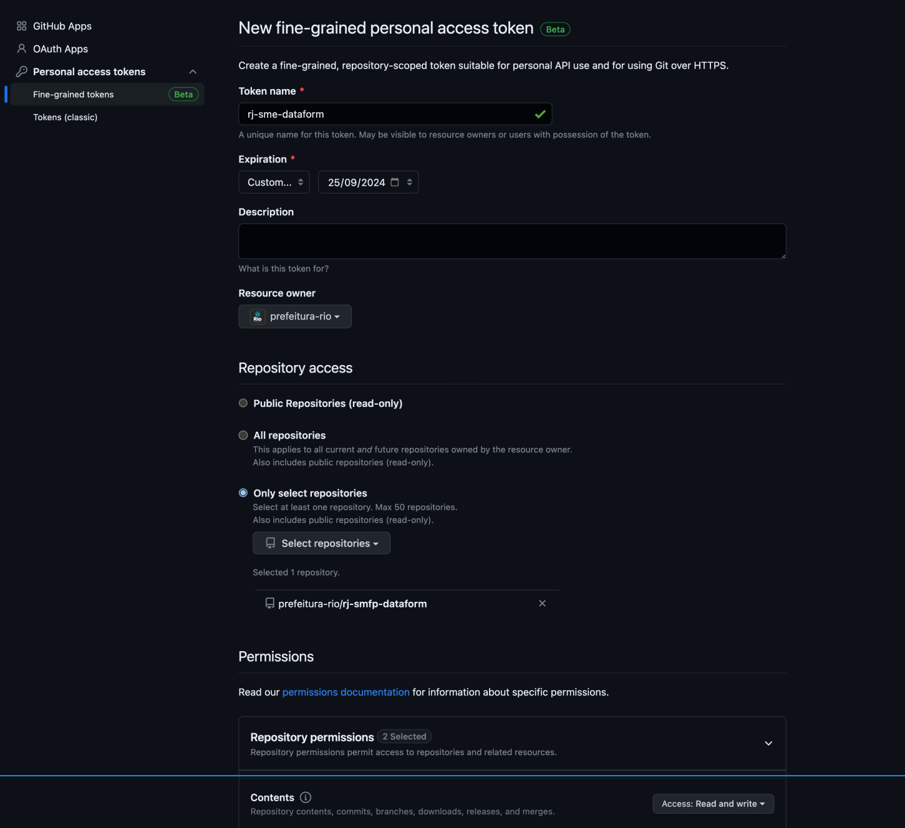

Automação de analises no BigQuery
Organização de Datasets e Tabelas
A organização eficiente dos datasets e tabelas no BigQuery é fundamental para manter um ambiente de dados limpo e gerenciável. Durante o desenvolvimento de uma nova análise ou dashboard, é recomendável seguir um conjunto de práticas específicas para garantir a clareza e a organização dos dados.
Projetos de Desenvolvimento
Durante o desenvolvimento de análises e dashboards, recomenda-se a utilização de um projeto de desenvolvimento específico. Por exemplo, para o projeto de produção rj-smfp utilize o projeto de desenvolvimento rj-smfp-dev. Isso ajuda a separar claramente os ambientes de produção e desenvolvimento.
Nomenclatura de Datasets e Tabelas
A estrutura de nomeação de datasets e tabelas deve seguir boas práticas para facilitar a identificação e a compreensão dos dados. A seguir, estão algumas diretrizes para nomear datasets e tabelas:
- Use todas as letras minúsculas (inclusive siglas), sem acentos, conectadas por underscores (_).
- Evite abreviações e inclusão de conectores como "de", "da", "dos", "e", "a", "em", etc.
- Ao criar datasets destinados a análises ou dashboards, mantenha o nome original do dataset e acrescente o sufixo dashboard ou analise, juntamente com a identificação do órgão responsável. Por exemplo para um dashboard relacionado ao sistema ERGON feito pela SUBGCC; as tabelas se encontram no dataset_id:
recursos_humanos_ergon, os dados relevantes para esse dashboard devem ser armazenados no dataset_idrecursos_humanos_ergon_dashboard_subgcc. - Utilize nomes de datasets e tabelas descritivos para refletir claramente o conteúdo ou finalidade dos dados.
Tipos de Tabelas no BigQuery
O BigQuery oferece três tipos diferentes de tabelas, cada uma com suas características:
-
Tabelas Externas: Tabelas externas funcionam de forma semelhante a tabelas normais do BigQuery. Os detalhes sobre a estrutura da tabela, como as colunas e os tipos de dados, são armazenados no BigQuery. No entanto, os dados em si permanecem na fonte externa. Isso pode incluir fontes como Google Cloud Storage (GCS), Google Sheets, Google Drive e outras. Para saber mais, consulte como consultar fontes de dados externas.
-
Tabelas Nativas: Tabelas nativas contêm os dados diretamente dentro do BigQuery. Essas tabelas oferecem alta velocidade de consulta, mas possuem um limite de 4 mil partições, o que pode ser um fator limitante para conjuntos de dados muito grandes.
-
Views (Visualizações): Uma view é uma tabela virtual criada a partir de uma consulta SQL. Ela não armazena dados fisicamente, mas, em vez disso, fornece uma maneira conveniente de organizar e acessar dados de outras tabelas. Para obter mais informações, consulte como criar visualizações.
Esses três tipos de tabelas oferecem flexibilidade para lidar com uma variedade de cenários de armazenamento e consulta de dados no BigQuery. A escolha do tipo de tabela depende das necessidades específicas do seu projeto e da fonte dos dados que você está gerenciando.
Importação de Dados do Google Sheets
Uma maneira eficaz de trazer dados de fontes externas para o BigQuery é por meio da importação de dados do Google Sheets. Essa integração permite que você trabalhe com dados de planilhas do Google diretamente no ambiente do BigQuery.
-
Nas opções do dataset clique em criar nova tabela
-
Na página de configuração da nova tabela, escolha a opção Drive como origem dos dados, indique a URL da tabela no google sheets e selecione o formato Google Sheet em seguida defina um nome para sua tabela. No final você deve ter algo como na imagem abaixo:
-
Voce pode definir o Schema manualmente ou utilizar a função de auto deteção. Na seção de opções avançadas indique a linha que represente o header da tabela para que ele não seja interpretado como um dado:

-
É importante que a tabela no google sheets seja pública ou que os usuarios tenham permissão de visualização para executar queries na tabela criada.

Guia de Automação com BigQuery Dataform
O BigQuery Dataform é uma ferramenta poderosa que simplifica a automação de transformações de dados no Google BigQuery. Neste guia, vamos abordar as etapas essenciais para configurar o BigQuery Dataform e automatizar tarefas de gerenciamento de dados. Essa é uma versão simplificada da documentação, para mais detalhes consulte a documentacao oficial do Dataform
Configuração do Repositório
Antes de começar, é fundamental configurar um repositório para seus projetos de dados no BigQuery Dataform. Aqui estão as etapas:
-
Comece criando um repositório no BigQuery Dataform. O repositório é o local onde você gerenciará seus projetos de dados e deve seguir o padrão,
rj-orgao-dataform;rj-smfp-dataform. -
Crie um projeto no Github com o mesmo nome do repositorio do dataform,
rj-orgao-dataform;rj-smfp-dataform.2.1. No seu perfil do Github selecione a opção settings e selecione o menu developer settings, selecione a opção Fine-grainted tokens em Personal Acess Tokens 2.2. Crie um novo token seguindo o mesmo padrao de nomeação do repositorio (
rj-orgao-dataform;rj-smfp-dataform). Defina a data de data de expiração para o maior valor possivel, selecione a organização de interesse e de permissão apenas para o repositorio desejado. Em permissões de acesso read and write para Content.  2.3. Salve o token gerado. Vá até o Secret Manager do Google Cloud e crie um novo secret com o mesmo nome do repositorio, cole o valor do token no campo secret value e clique em criar novo secret.
-
No repositorio do Dataform vá até Settings e clique em Edit Git Connections . Selecione a opção HTTP e cole a URL do repositorio do Github acompanhado de .git, coloque o nome da branch como master (em alguns casos pode ser main) e selecione o secret criado na etapa anterior. Copie a conta de servico default fornecida pelo Dataform na parte inferior da janela, no exemplo da imagem é service-681461412723@gcp-sa-dataform.iam.gserviceaccount.com .
-
Vá até o Resource Manager do Google Cloud e de acesso para a conta de serviço default fornecida pelo dataform para o projeto de prod (rj-smfp) e dev (rj-smfp-dev) com a permissões abaixo:
- Dataform Service Agent
- EDRio - Infra - Conta de Serviço
- Secret Manager Secret Accessor
Essa integração permite o controle de versões dos modelos desenvolvidos no Dataform em ambientes de desenvolvimentos que são branchs do repositório do github.
Criação de Modelos
Configuração ambiente desenvolvimento
No Dataform, você interage com o código do fluxo de trabalho SQL em um espaço de trabalho de desenvolvimento. Um espaço de trabalho de desenvolvimento é sua própria cópia editável de um repositório. Em um espaço de trabalho, você cria, edita ou exclui o conteúdo do repositório sem afetar outros que trabalham no mesmo repositório e, em seguida, confirma e envia as alterações para o repositório.
É possível desenvolver seu fluxo de trabalho SQL com o núcleo do Dataform ou JavaScript. O Dataform compila seu código em consultas SQL em tempo real.
-
O primeiro passo para criação de modelos é a criação de um ambiente de desenvolvimento. Vá até a interfacie do Dataform selecione o repositorio e crie um ambiente de desenvolvimento caso necessario, de algum nome descritivo ex:
dashboard_ergon_suggc. -
Entre no ambiente de trabalho e inicialize o ambiente caso seja necessario.
-
Caso o ambiente já exista SEMPRE realize o Pull from remote branch antes de iniciar qualquer edição. Entre as opções estão:
- Pull from remote branch (Puxar de branch remota): Essa opção é utilizada para "puxar" as últimas atualizações do ambiente de desenvolvimento. É como atualizar seu trabalho com o que outras pessoas fizeram.
-
Pull from default branch (Puxar da branch padrão): Similar ao primeiro, mas específico para a branch principal do projeto.
-
Push to remote branch (Enviar para branch remota): Essa opção é utilizada para "empurra" suas alterações para a branch do ambiente de desenvolvimento.
-
Push to default branch (Enviar para a branch padrão): Essa é a mesma ideia do anterior, mas específica para a branch principal do projeto.
-
Revert to last commit: (Reverter para o último commit): Desfaz todas as edições até o ultimo commit.

Para entender a estrutura de um ambiente no Dataform, é importante conhecer os principais componentes e conceitos envolvidos;
-
A pasta definitions é o coração do ambiente do Dataform. Ela contém os arquivos que definem as transformações de dados e as operações que desejamos automatizar.
-
Os arquivos com a extensão .sqlx contêm código SQL que descreve as transformações de dados que você deseja aplicar. Esses arquivos são escritos no formato SQLX, que é uma extensão do SQL padrão e suporta recursos adicionais, como a definição de modelos, testes e documentação.
-
Arquivos .sqlx suportam configuracoes especificas como o tipo de tabela a ser criado, em qual dataset sera salvo, nome da tabela entre outras, para informacoes detalhadas consulte a documentacao oficial, segue um exemplo de config que deve ser colocado no inicio do arquivo:
config { type:"table", name:"fita_banco_filtered", schema:"dashboard_ergon_subgcc", description:"Fonte filtrada para o ano de 2023." columns: { ano: "Ano da folha" mes: "Mês da folha" } } -
O arquivo dataform.json é o arquivo de configuração do seu projeto Dataform. Ele contém informações sobre como os modelos são construídos, quais tarefas devem ser executadas e como as dependências entre modelos são gerenciadas. É onde você especifica configurações como o esquema padrão do BigQuery, conexões de banco de dados e programação de tarefas. Para mais informações acesse a documentação oficial
Criação de um Novo Modelo
Para criação de um novo modelo primeiro iremos definir um padrao de estrutura e organização de pastas dentro da pasta definitions. Os modelos criados no ambiente devem ser savos dentro de uma pasta com o mesmo nome do ambiente, dessa forma isolamos projetos, dashboard e analises de outros ambientes, seguindo o exemplo amterior teriamos definitions/dashboard_ergon_suggc. Dentro dessa pasta podemos organizar nossas queries da forma que melhor nos atender.
No exemplo da imagem criamos uma tabela filtrada que servira de fonte para as demais agregaçoes, observe que o nome do arquivo e o nome da tabela no config devem ser iguais. Dessa forma iremos consultar apenas a tabela filtrada e não todo conjunto de dados, gerando redução de custos. Também é possivel executar a query na opção Run

Ao criarmos um modelo podemos fazer uma referencia direta a ele em outro modelo utilizando o metodo ${ref("nome_do_modelo_referenciado")}. Dessa forma adicionamos o modelo referenciado como uma dependência do novo modelo criado, é importante que o nome dos modelos sejam unicos. Segue um exemplo para tabela de agregacao pagamentos_ano_mes que referencia o modelo fita_banco_filtered

Na aba Compiled Graph é possivel visualizar o grafo de dependencias dos modelos do ambiente de desenvolvimento. Tambem é possivel executar um modelo e suas dependencias na opção Start Execution
Ao finalizar as edições SEMPRE sincronize suas modificações com o repositorio do Github. Clique na opção Git Commit selecione todos os arquivos e escreva alguma menssagem que descrevam a alteração realizada e finalize o commit.
Finalize a sincronização clicando em Push to default branch

Execução do Fluxo de Trabalho
Agora que temos um fluxo de execução de modelos definido, podemos automatizar sua execução com agendamentos.
Primeiramente devemos criar o Release Configuration. Dentro do repositorio do Dataform selecione a aba Release Configuration, e clique em New Release Configuration.
Preencha os campos como na imagem abaixo, utilizando o nome do ambiente de desenvolvimento acompanhado da frequencia de atualização para o Relese ID, no campo Git Commitish coloque o nome do ambiente de desenvolvimento que contem os modelos a serem executados, selecione a frequencia de atualização e timezone desejadas.
Na seção Compilation variables é possivel definir o projeto que as tabelas/views seram criadas e sulfixos para o nome das tabelas e datasets. Enquanto estiver na etapa de desenvolvimento é indicado utilizar o projeto rj-orgao-dev, ao finalizar o desenvolvimento esse parametro pode ser alterado para o projeto de produção rj-orgao.
Com o Release Configuration criado pdoemos criar o agendador para executar nossos fluxos de modelos.. Dentro do repositorio do Dataform selecione a aba Workflow Configuration, e clique em New Workflow Configuration
Preencha os campos como na imagem abaixo, para o campo Configuration ID utilizando o nome do ambiente de desenvolvimento acompanhado da frequencia de atualização, no campo Relese Configuration selecione o relese que deve ter o mesmo nome do Configuration ID, no campo Service Account selecione a conta de servico padrao criada pelo Dataform, selecione a frequencia de atualização (lembre-se de colocar o inicio da execução alguns minutos apos o definido no Release Configuration) e timezone desejadas.

Na seção de seleção dos modelos, selecione os modelos a serem executados e suas dependencias.

Conectando com o Produto Final
Integração com Looker Studio
Integrar o BigQuery com o Looker Studio permite criar painéis de controle interativos. Exemplo:
Integração com Google Sheets
Para compartilhar dados do BigQuery no Google Sheets, siga as etapas:
Integração com Python e R
Conectar o BigQuery ao Python ou R podemos utilizar o pacote basedosdados da desenvolvido pela ONG Base dos Dados. Para mais detalhes acesse a documentação oficial do pacote, segue um exemplo para python:
import basedosdados as bd
# Consulta ao BigQuery
query = """
SELECT
*
FROM `rj-smfp.dashboard_ergon_subgcc.pagamentos_ano_mes`
"""
df = bd.read_sql(query, billing_project_id="SEU_PROJECT_ID")